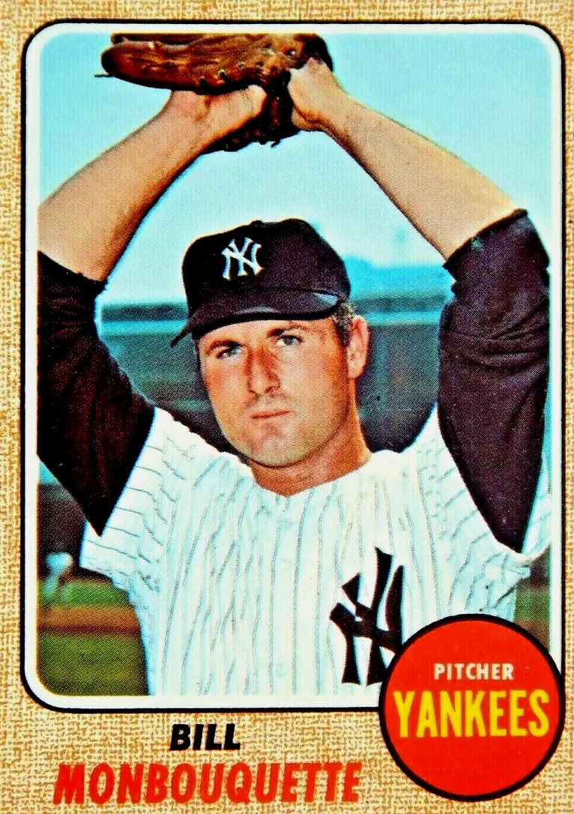

Bill Monbouquette "Monbo"
Career Highlights & Facts
(Facts are AI-generated and may require verification)
- Pitched a no-hitter against the Chicago White Sox on August 1, 1962.
- Struck out 17 batters in a single game on May 12, 1961.
- Was selected to four American League All-Star teams.
Would you like to find out more about Bill Monbouquette?
Career Totals
| WAR | W | L | ERA | G | GS | SV | IP | SO | WHIP |
|---|---|---|---|---|---|---|---|---|---|
| 20.8 | 114 | 112 | 3.68 | 343 | 263 | 3 | 1961.1 | 1122 | 1.253 |
Statistics via Baseball-Reference.com
The Original Clue